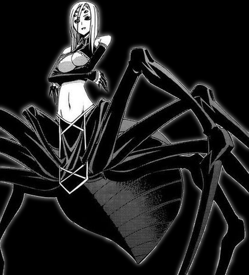

Аранея (Aranea)

В отличии от остальных сородичей, которые ассоциируются в умах с летучими мышами, или хищниками, Клан Аранея можно про ассоциировать с пауками плетущими сети.
Клан Аранея в основном состоит из одиночек привязанными больше к смертным, чем к другим членам клана. Как ни странно социальная связь является ключом и необходимостью в нежизни аранея. Тайные увлечения, интрижки и самые сокровенные желания смертных, вот о чём хотят знать аранея.
Лакеи при дворах, молчаливые клевреты и порой разведчики, вот кем обычно бывают представители данного клана. Им известны все подковёрные интриги в местах, где они обитают. В наши ночи, их чаще можно увидеть в роли бармена участливо выслушивающего очередную историю жизни. Распространите средств связи, дало огромное могущество аранея, позволяя им быть затворниками в своих квартирах и одновременно владеть массой различной информации.
Из-за пресыщенностью информации и в погоне за её разнообразием многие из аранея поддаются утехам смертных. Особо популярностью пользуется БДСМ и «шибари» - искусство связывания, что вдвойне иронично, для этого клана.
Другие сородичи видят их вуайеристами и извращенцами, копающимися в грязном белье в прямом и переносном смысле. Что так же не мешает иметь их как полезных союзников. Хотя обычно это игра подобно вызову дьявола, в которой вызывающий всегда проигрывает. И все тайны всё равно переходят в руку аранея. Носферату не видят в них прямых конкурентов, хотя и относятся с опаской, так как для аранея тайны сама цель, а не средства для получения величия.
Прозвище: Извращенцы
Секта: Большая часть аранея стараются держаться подальше от приписывания себя к той или иной секте, оставляя себе пути для манёвров. Это порой лишает их интересных слухов, но зато позволяет быть в безопасности. К тому же, доказавшие свою безобидность, аранея, часто могут быть приглашены на встречи в знак уважения.
Внешность: Все аранея выглядят максимально «обычно». Могут быть одетые в костюмы джентльмены или рубашки с коротким рукавом просто парни по соседству. Главное это не привлекать лишнего внимания даже оставаясь на виду. Никаких звенящих цепей на поясе или блестящих шипов, никакой роскоши и дорогих украшений. Туфли должны быть идеально присыпаны пылью, не слишком грязные, но и не сверкающие новизной.
Убежище: Аранея выбирают себе тёмные уголки, подвалы, небольшие квартиры на первом или последнем этаже. Убежище это их личное царство атрибутика которого может шокировать случайного гостя своей эклектичностью и порой даже пошлостью.
Происхождение: Выявить чёткий критерий по которому человек будет становлён крайне сложно, в этом члены клана похожи на малкавиан или бружда. Но в отличии от них аранея крайне редко дают становления, и по этому их очень сложно найти.
Создание персонажа: Концепты аранея обычно связаны с поиском информации, это может быть бармен, хакер или отаку. Преобладают ментальные атрибуты, потом социальные. Так же отдаётся предпочтение познанием, а после талантам. Дополнения могут быть любыми, но чаще всего это контакты и союзники. Крайне редко может быть ментор или наставник
Клановые Дисциплины: Пристуствие, Арахнизм, Руморизация.
Слабости: Привязанность к паутинам сыграла злую шутку, прочно привязав всех аранея к социальным контактам. При создании необходимо потратить очки, чтобы хотя бы один уровень Руморизации. Так же для пробуждения аранея не может тратить кровь как обычные вампиры, а только пункты слухов
Организация: Клан Аранея очень разобщён, чтобы иметь определённую организацию, обычно они держат около себя только полезных их членов из любых кланов. Единственная возможная причина для встречи это похвастать или обменяться слухами, что в эти ночи можно сделать и через сеть интернет.
Стереотипы
Носферату: Ха! Они скрывают свою истинную природу от всех, как и мы, и они все знают, так что, наверное, лучше им не грубить. Мы можем быть отличными приятелями или злейшими врагами, время покажет
Гангрелы: В конце концов, они тоже близки со своим зверем, так? Просто их зверь, немного более стрёмный. Зато они одиночки и не будут лезь к нам
Цимисхи: Гигантские человекоподобные пауки, фу, какая мерзость, почему не мы это придумали?
Вентру: Само их существования - угроза маскараду, если бы они не были бы так полезны, они бы не протянули и одной ночи.
Тремер: Они что, правда считают, что могу лезь в чужие тайны. Нет. Эта ниша уже занята нами.